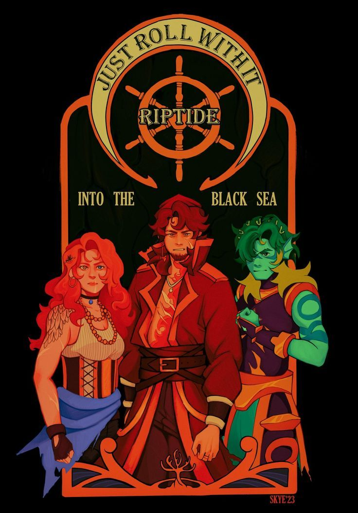
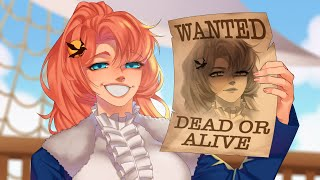
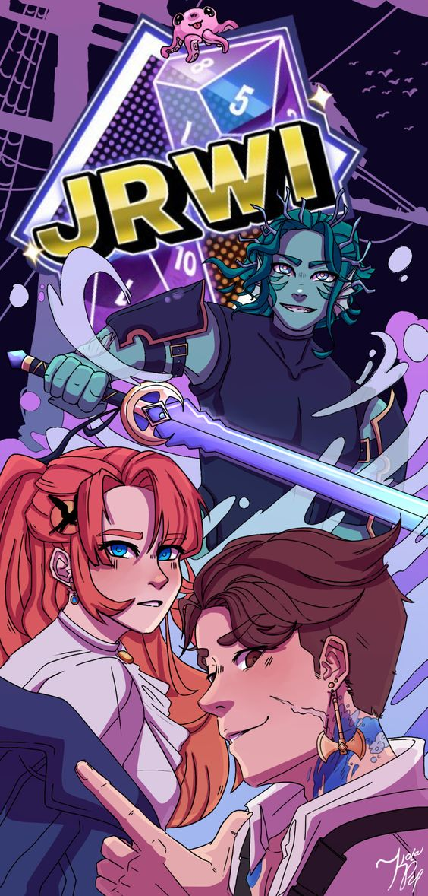

The Riptide Campaign
The defenition of a Riptide is an extremley strong unpredictable curent that flows against others. You've probably heard the dangers of Riptides and how they'll just--- pull you in. This Riptide is no different. Join our... Heros(?) Gillion, Chip, and Jay on their journeys across the world of Mana.
Our Journey
Our journey begins as any good stories do- in the midde of nowhere in the ocean. Navice pirates Chip and Jay find one Gillion Tidestrider floating atop the waves and pull him aboard, thus banding the Riptide Pirates. Our trio of confused pirates find themselves navigating tough waters and even tougher calls, entertwining their fates with the mysterious, master of desire, Niklaus Hendrix. From humble beginings our pirates journey further digging up treasure, new crewmates, and secrets that thrust them futher down an unknown path. With the weight of every sad town they help, every navy base they raid and capture they evade- with every mystery they unveil our heros fall futher and futher down a dark hole. Dispite the odds our three heros, from completley different worlds, colide to save eacother and the world as a whole. But of course, every good hero has some baggage, how else would you keep it interesting?
Chip

Chip "Bastard" Rose(?), one of the three captains of the Riptide pirates and the original Riptide Pirate. With little memory of his past, Chip in a bit of an enigma, but a skilled pirate. Being raised on a pirate ship for a good part of his childhood- and not just any any pirate ship- the Black Rose Pirates, some of the best of the best- will do that. Chip was taken for the Black Rose at a young age by the Hole in the sea, that took his captain, most of his crewmates, and his best friend. Now, hell-bent on living up to the memory of his mentor and saving his hold crew, Chip is haunted by the fate handed down to him from the Black Rose. Chip lived here and there for most of his life after the Black Rose, getting into all kinds of things to stay alive, many of which things have contributed to his lack of memory. After meeting Jay, Chip banded together the Riptide Pirates to begin his quest to be the best pirate he could, and to find his lost friends. Through his Journey chip changes quite a bit- most for the better- and finds that there and new friends to go on for.
Gillion

Gillion "Destiny" Tidestrider, the digraced prophecy chid of the undersea. Gillion spent most of his life away form almost everyone including his family being trained as the prophesied champion of the Undersea, a title thrust upon him since birth. With his head being filled with delusions of grandeur and his days occupied with nonstop training, Gillion did become the undersea's greates warrior- but not the smartest. After years of training and preperation, Gillion made the mistake of speaking out of turn to forign general visiting the Undersea. Or- rather I should say, Gillion made the mistake of attacking the visiting general, causing him to be banished from the Undersea for his crime and puting the Undersea at risk. It was after this that Gillion was found floating atop the ocean by his soon to be crewmates Chip and Jay. Struggling with figuring out who his is, who hes ment to be, and who hes been trained to be Gillion carves his own path with the Riptide pirates in a quest to figure out what he's fighting for.
Jay
Jay Ferrin "the navigator", Daughter of Navy General Jayson Ferrin
